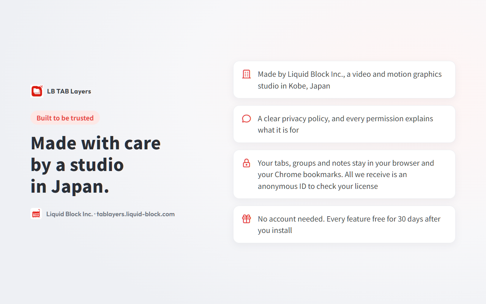

The two things that matter most are agreeing on what the video is for, and agreeing on how revisions will be given. In the brief, cover the purpose, where it will be shown and how long it is, reference videos and why they are references, who makes the final call, and the deadline and review rounds. For revisions, say which video, what second, where and how, mark the spot on the frame, and send everyone’s comments together in one round.
We are a video and motion graphics studio in Kobe, Japan, and we have worked with a lot of clients over the years. This article is the view from our side of the table: what you can do, when you brief a video and when you give feedback, to get a better video sooner. It is written so you can use it even if this is your first video project.
What to include in a video production brief
1. The purpose: who will watch it, and what should they do?
“Something that looks cool” is hard to work with. “Get people at a trade show to stop and listen to our pitch” gives the team something to decide with. Write what you want viewers to do after watching in one sentence.
2. Where it will be used, and how long it is
Website, social media, an exhibition, an internal meeting? Vertical or horizontal? Will the sound be on? The length usually follows from these answers.
3. Reference videos, and why they are references
When you send a reference video, say what you like about it: the colors, the pace, the way the text appears. If you send a whole video and say “something like this”, you and the studio will end up looking at different things.
4. Who makes the final decision
Decide at the start who will say “this is approved”. If the decision-maker changes halfway through, everything reviewed so far may have to be reviewed again.
5. The deadline and the review rounds
When is it due, and how many times will you review it? Fix the review dates early, so everyone involved can keep those days free.
6. Handing over materials
Logos, photos, documents: send them together, in one go. When they arrive a few at a time, it becomes hard to tell which one is the latest.
How to give video feedback that gets fixed in one round
Say which video, what second, where, and how
“Make it a bit brighter overall” is hard to act on. “At 0:12, make the logo a little bigger” can be fixed quickly and correctly. Which video, what second, where on the screen, and how to change it. With those four, most revisions are done in one pass.
Mark the frame instead of describing it
Pointing at a spot with words is unreliable. Pause the video and draw a circle or an arrow on the frame. It is much harder to misread.
Collect everyone’s comments first, then send them once
When several people on your side send their own notes separately, the notes can contradict each other. Gather the comments on your side, settle any disagreements, and send one set. That alone cuts down the number of rounds.
Keep a folder structure on the client side too
The brief, the references, the email threads, the review videos, the final files: give each project its own folder, and file what you receive in date folders. It becomes your template for the next video, and it still makes sense when someone else takes over or when you look back a year later. We explain the structure in folder and file naming conventions.
Tools we use for revision notes
LB TAB Layers is a Chrome extension we built for our own work. It has a few features for revision feedback, and they are useful on either side, studio or client.
- Pause, write, press Enter: on YouTube, Vimeo or Google Drive, pause the video and add a note with Add a revision note at this moment (Alt+Shift+C). The note keeps the time, and playback carries on. “What second” is filled in for you. Revision notes are a PRO feature, available during the free trial.
- Numbered pins on the frame: use Add notes on a paused frame or a page screenshot to place numbered marks ①②③, then Download as PDF or Download as PowerPoint to share a revision sheet.
- Live pen: during an online meeting, while you share your screen, draw circles and lines on the page to show “here” (Alt+Shift+D). The strokes fade after a moment. It is free.
Since we started collecting revisions this way in our own studio, our revision rounds have been finishing about three times faster than before.
Summary
- In the brief: purpose, where it is used and how long, references and why, who decides, deadline and review rounds, materials in one go
- In revisions: which video, what second, where, and how, marked on the frame
- Collect everyone’s comments and send them in one round
- Keep a folder structure for each project on your side, too
Frequently asked questions
Q. What should I tell a video production company first?
The purpose: who will watch the video, and what you want them to do afterwards. Once the purpose is clear, the studio can decide on the length, the format and the style.
Q. How should I share reference videos?
Say what you like about each one, such as the colors, the pace or the way text appears. A whole video with “something like this” is easy to misread.
Q. How do I give feedback on a video?
For each change, say which video, what second, where on the screen and how to change it, and mark the spot on a paused frame. Collect everyone’s comments on your side and send them together in one round.
See it in action



Revision notes, pinned to the second.
Pause the video, write, press Enter. Notes keep their timestamp and can go out as a PDF or PowerPoint sheet.
Add to Chrome — it's free →